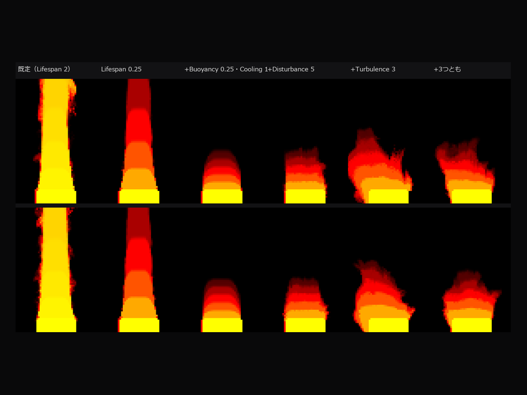
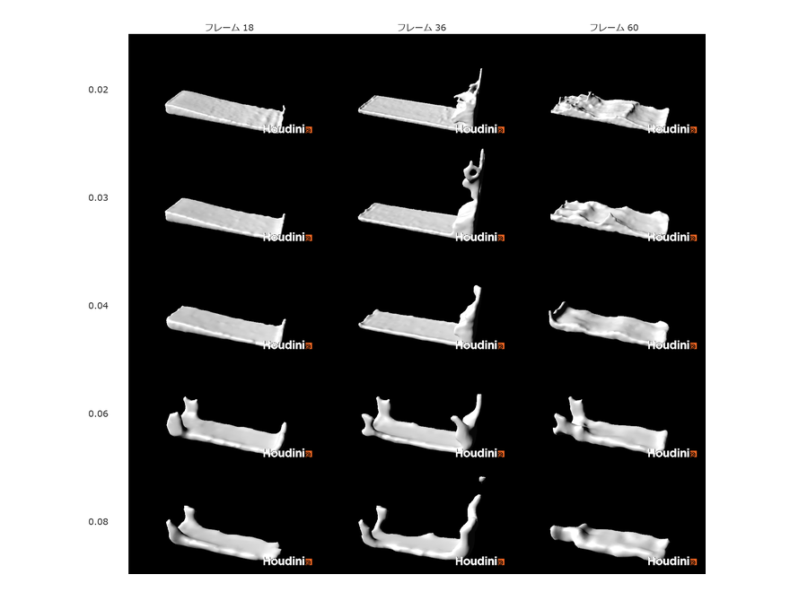
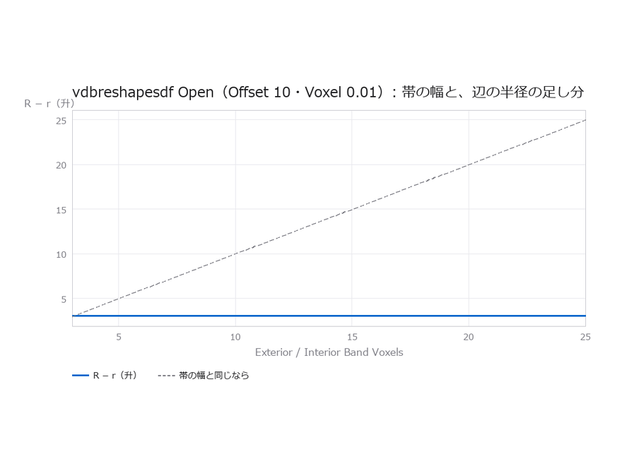
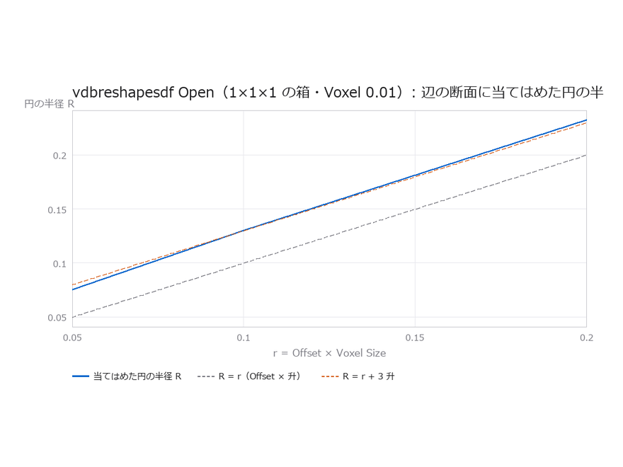
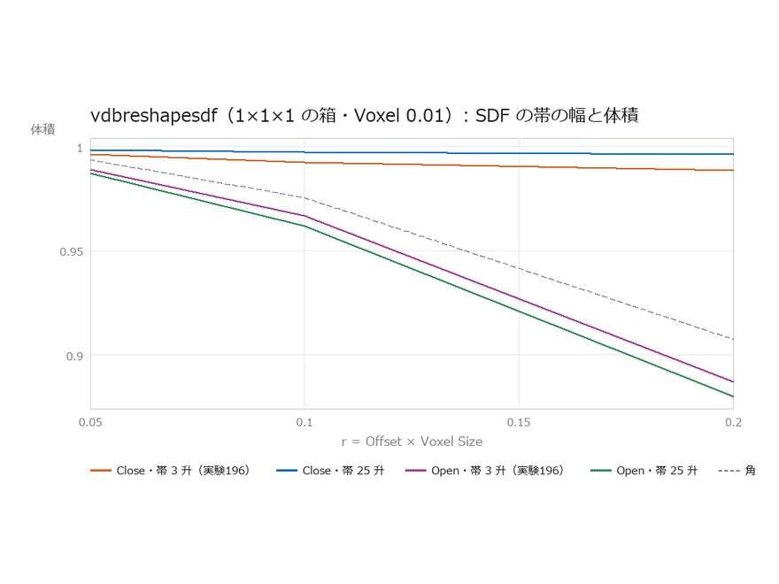

Houdini 研究部
Houdini の機能を1つずつ動かし、結果を数値で記録しています。実験の記録、作り方の手順、ノードと用語の解説を、ここから探せます。

Pyro で焚き火の炎（高さ 1.2 m）を作るなら Flame Lifespan 0.25・Buoyancy 0.25・Cooling Rate 1焚き火はLifespan 0.25・Buoyancy 0.25・Cooling 1で1.2m。揺らすのはTurbulence
FLIP のダムブレイクは Particle Separation 0.04 で足りるダムブレイクは粒の間隔0.04で足りる。粗いと壁ぎわの数粒が塊に見える
Open で丸めた辺の半径が約 3 升大きいのは、SDF の帯のせいではないOpenの辺の半径の足し分(約3升)は帯の幅によらない
vdbreshapesdf の Open で丸めた辺の断面は円弧Openの断面は円弧。半径はOffset×升より約3升大きい
SDF の帯を 25 升に広げると、vdbreshapesdf の Close は箱をほとんど削らなくなる帯を25升に広げるとCloseはほぼ削らない。Openの丸みは逆に大きく vdbreshapesdf の Open は箱の角を r より少し大きく丸めるOpen は箱の角を r より大きく丸める（約3升の足し分。実験198で訂正）。Close も凸な箱を少し削る
vdbreshapesdf の Open は箱の角を r より少し大きく丸めるOpen は箱の角を r より大きく丸める（約3升の足し分。実験198で訂正）。Close も凸な箱を少し削る
 vdbreshapesdf の Dilate・Erode は、球の半径を Offset × 升の大きさだけ変えるDilate・Erode は半径を Offset×升の大きさだけ変える。Iterations は効かない
vdbreshapesdf の Dilate・Erode は、球の半径を Offset × 升の大きさだけ変えるDilate・Erode は半径を Offset×升の大きさだけ変える。Iterations は効かない
 POP の粒が数えられるフレームは Life × fps − 1/Substeps粒が数えられるフレームは Life×fps − 1/Substeps
POP の粒が数えられるフレームは Life × fps − 1/Substeps粒が数えられるフレームは Life×fps − 1/Substeps
Start Hereはじめての人へ
上から順に読むと、作り方 → 確かめ方 → 言葉の意味、の順で入れます。
Showcaseこれまでに作ったもの
プロシージャルモデリングから始めて、エフェクト・毛・リグ・MPM へ。カードから記録と作り方へそのまま飛べます。
地面に物を生やす
200個すべての向きを測って、複製の向きが N のどの軸に対応するかを確定させた。答えは Z 軸。
割ると丸くなる
面の数はちょうど4倍ずつ増える。縮む原因は分割ではなく平滑化だった。
ノイズの種類で形が変わる
14通り並べると振幅に9.3倍の開きがあった。外へ押すものと内へ削るものがある。
落として、砕く
硬い物体なので体積は全フレームで 8.00000。ばらつきは 0.0000000 だった。
煙の減り方を式にする
毎フレーム (1−d) 倍という仮説を立て、実測と4桁一致させた。
毛を生やす
density は本数ではなく面積あたりの本数。100 を入れて 1,249本、面積 12.53 で割ると 99.678。
曲げても痩せない骨
90度曲げたときの体積の減りが Linear で 27.1284%、Dual Quaternion で 0.1764%。
塊を滑らせて、摩擦を式で確かめる
MPM の Ground Friction は教科書のクーロン摩擦の μ そのもの。止まる距離が式と 0.04% で合った。ただし塊が潰れ始めると式から外れる。
ノイズはどこまで減るのか
サンプル数を4倍にすればノイズは半分、という式は狭い範囲でしか当たらなかった。指定した数がそのまま使われていない。
届かない場所を指す
逆運動学で届かない目標を指すと、腕は伸びきってそこで止まる。9通りすべてで式と全桁一致。
風を当てる
風速だけ上げても何も起きない。風は空気抵抗を通してしか効かず、その抵抗は速さの2乗だった。
Workflowやり方
ノードの組み立ても描画も、hython という文字だけの実行環境から行っている。
組む
ノードを作って配線する。変えたパラメータだけ記録に残す。
測る
保たれるはずの量を選び、条件ごと・フレームごとに数える。
撮る
全条件を同じカメラから描画する。見た目の差が条件の差になる。
検算する
先に式を立てて、実測と突き合わせる。外れたら指標を疑う。
配る
PDF・このサイト・Gemini Notebook へ同じ内容を流す。
Rulesこの場所の決めごと
実測を正とする
ネットの情報は出典を確かめ、動かせるものは動かす。「Apprentice では hython が使えない」も「mountain のパラメータは roughness」も、実際には誤りだった。
測り方も残す
実験003では最初に選んだ指標が不適切で途中で捨てた。失敗した測り方も消さずに書く。
否定できる形で試す
「縮む原因は平滑化」は、平滑化しない方式に切り替えて確かめた。覆る条件を先に決める。
用語は1か所で管理する
glossary.json から用語集・本文のポップアップ・Notebook 用 PDF を生成している。説明が食い違わない。
ソースは増やしすぎない
Gemini Notebook の上限は300件。実験ごとに増やさず、テーマ単位の1ソースを差し替えて更新する。
つながらない話は分ける
プロシージャルモデリングとエフェクトは別の流れとして扱う。読む側が筋を追える単位で切る。
Tools使っている道具
| 用途 | 中身 |
|---|---|
| ノード構築とレンダ | hython 21.0.700（Apprentice） |
| 確認用の描画 | OpenGL ROP / Smooth Wire Shaded（速い。1枚0.7秒） |
| 見せる描画 | Karma（光が中を通る。同じ絵で5倍の時間） |
| 接続図 | ノード位置の JSON から Pillow で描画 |
| レポート | reportlab で日本語 PDF。文字が残るので Notebook が引用できる |
| Notebook 連携 | notebooklm-mcp-cli（ローカル PDF を直接ソースにできる） |
Houdini 21.0.700（Apprentice）· hython で実行 · Gemini Notebook のソース 41 / 300
Experiments
実験
カードを押すと要点が開く。そこから全文のログへ進める。
001〜007 は形を作る側の話。分割とノイズがそれぞれ何を決めているかを切り分けた。 → 008〜012 で道具が増える。ばらまき・複製・VEX・ブーリアン。 → 013 から時間が入り、014〜017 はシミュレーション。 剛体・布・煙・液体を順に当たっている。
完了した実験
カードを押すと要点が開く。タグで絞り込める。
Efficiency
効率化
レンダリングもシミュレーションも、重くなるのはたいてい同じところ。これまでの実験で測った「速さ」の結論だけを集めた。どれも数字の裏付けがあり、ボタンから元の実験に飛べる。
形（ジオメトリ）
-
たくさん並べるものは pack する
球（362点）を1万個並べると、pack を切ったままでは 3,620,000点・3,800,000面。pack を入れると 10,000点・10,000面で、点の数は362分の1。計算は 0.129秒から 0.002秒（64倍速い）、書き出しは 0.527秒から 0.016秒、ファイルは 22.537MB から 0.114MB（198分の1）。中身を触るときだけ unpack で開く。
-
散らすのは、少しずつ何度もより一度にまとめて
scatter の1点あたりの時間は、100点で 10.873マイクロ秒、100万点で 1.038マイクロ秒。準備にかかる固定の分が点の数で薄まるので、少ない点を何度も散らすほど割高になる。100万点でも約1秒。
-
平らな面で表せる形に VDB を通さない
箱に円柱の穴を開けるとき、boolean は 86面・0.006秒で答えと6桁まで一致した。同じ形を VDB 経由で作ると、升目 0.005 で 307,968面・0.106秒かけても答えとの差は 0.000013 残った。面の数は3,581倍、精度は下。曲面や溶け合いが要らないなら、VDB を通す理由は無い。
-
面を減らすのは、減らす量を増やしても遅くならない
polyreduce で 3,540面を 80%から2%まで減らしたとき、時間は 0.006秒から 0.014秒の間に収まり、残す割合との関係は見えなかった。どれだけ減らすかで悩んで少なめにしても、時間の得にはならない。
-
辺の長さを半分にすると、面は4倍・時間も約4倍
remesh で目指す辺を 0.2→0.1→0.05→0.025 と半分にすると、面は実測 4.289 / 3.961 / 4.101倍。時間は 0.008秒→0.017秒→0.064秒→0.315秒。代金は面の数にそのまま乗る。ずれは約1/4ずつ小さくなるので、どこで止めるかは見た目と時間の釣り合いで決める。
-
VDB の升目を半分にしても、重さは8倍ではなく約4倍
vdbfrompolygons で升目を半分ずつ細かくしたとき、持っている升目の数は実測 3.706 / 3.917 / 3.975 / 3.993倍。表面の近くだけを持つので、空間の体積ではなく面積に比例して増える。ただし元の面より細かい形は出てこないので、細かくしすぎても精度は上がらない。
-
subdivide の深さは3で止める
立方体を Catmull-Clark で割ると、体積は深さ3で元の33.31%、深さ6で32.76%。差は0.55ポイントしかないのに、面の数は384から24,576へ64倍になる。1段ごとの形の変化は約4分の1ずつ小さくなるので、深さを上げても見た目はほとんど変わらず、重さだけが増える。
-
厚みを付けるだけなら peak より polyextrude
polyextrude の体積は面積×距離にぴったり合う（実験102、10通りで差0.000000）。peak は点の法線の向きに動かすので、角のある形では式が変わる（立方体は1辺が1+2dではなく1+2d/√3。実験100）。どちらも式には合うが、読みやすいのは polyextrude。
-
曲がった道の管は Stretch Around Turns を入れて作る
既定のままだと曲がり角で管が細り、1巻き12分割のらせんで体積が3.2%足りなかった。入れると断面積×長さとの差は0.04%以内。作り直しの手間が減る。
-
面に沿った距離は distancealonggeometry の Surface で一度に出す
attribfill の Arrival Time や Edge は辺をたどった道のりで、四角の網では最大41%長い。Surface は1,700点で数ミリ秒、ずれ0.0003未満。
描画（レンダリング）
-
確認用の描画は OpenGL、見せる絵だけ Karma にする
煙で OpenGL 0.71秒 対 Karma 3.64秒（256サンプル）で約5倍。地形では 1.29秒 対 3.20秒で2.5倍。毛では本数が増えるほど差が開き 4.1倍 → 17.4倍。OpenGL は毛の本数によらず 0.74〜0.76秒で一定だった。
-
サンプル数は 32 前後で頭打ち。上げる前にしきい値を疑う
samplesperpixel は上限であって指定ではない。64 → 4096 に64倍しても、実効サンプル数は 99 → 567 の5.7倍にしかならなかった。本当に詰めるなら varianceaa_thresh（既定 0.01）も下げる。0.0002 まで下げると時間は 5.39秒 → 70.64秒で13倍になる。
-
軽い絵を何枚も撮るなら、サンプル数より枚数が効く
640×360 で固定費が 2.26秒、1サンプルあたり 7.44ミリ秒。2サンプルでは時間のほぼ全部が固定費で、256サンプルでも半分強が固定費だった。
-
凸凹を bump で付けると一番遅い
bump は 8.32秒で、何もしない場合の1.9倍。点を動かさない displacement（6.32秒）より遅かった。「面を動かさないから軽い」とは限らない。遅い理由は未確認。
-
テクスチャの解像度は、見える大きさに見合えば十分
256 → 1024 に4倍しても、画の細かさは 2.9028 → 3.0095 の1.04倍にしかならなかった。この見え方の大きさなら 256 でほぼ足りる。
-
毛は太くすると時間が倍になる。本数は増やしても比例しない
太さ 0.001 → 0.008 で 5.0秒 → 10.7秒。本数を16倍にしても時間は4.2倍で、1本あたりは 0.9841ms → 0.2630ms と3.7分の1になる。
-
色を付けても重くならない
毛に色を付けたときのレンダ時間は 8.0秒 / 8.0秒 / 8.1秒。色は形の複雑さを増やさない。
-
発光（Emission）はライトを1つ足すのと同じくらい重い。まわりを照らさないなら emitillum を切る
同じ絵で Emission 0 が 3.79秒、64 が 12.35秒（3.3倍）。Emission 16 のまま Emission Illuminates Objects を切ると 10.27秒 → 3.40秒（3.0倍速い）。切っても文字は光ったままで、床の明るさだけが発光0のときと同じ 96.89 に戻る。
-
たくさん並べた物を USD に渡すなら、sopimport の Packed Primitives を Point Instancer に
箱 1 万個で、Point Instancer は .usdc 0.32 MB・読み込み 8 ミリ秒。Native Instances 1.49 MB、Xforms 1.64 MB、Unpack 2.40 MB。
シミュレーション
-
細かくしたいなら、刻み（substep）より粒を細かくする
MPM で粒を24.7倍にしても時間は3.73倍。substep を16倍にすると時間は25.5倍かかり、しかも高さはほとんど動かない（5通りで 0.2998〜0.3048）。
-
substep を上げるなら 8 が落としどころ
MPM で 16 との差が 高さ 0.004984 / 広がり 0.002012 / 体積比 0.003627 まで縮み、時間は 16 の53%。半分の時間でほぼ同じ結果。
-
粒は増やすほど1粒あたりが安くなる
MPM で 238粒のとき1粒 284.32µs、4,602粒で 20.11µs。14分の1。1フレーム進める時間はどれも 0.06〜0.09秒で、ほとんどが固定費だった。
-
面に戻すときの細かさは voxelscale ではなく粒の間隔で決める
mpmsurface の voxelscale を細かくすると点の数は 5,495 → 23,485 の4.3倍になるのに、形（体積）はほとんど変わらない。重くなるだけ。
-
HeightField の侵食は回数に比例しないが、4回あたりから重くなる
100×100 で 1回 0.68秒、2回 0.80秒、4回 2.35秒。1回目に下ごしらえの費用がかかり、そのあとは増えていく。実用の解像度では相応に重い。
-
曲がらない物のコライダは Animated (Rigid) にする
同じ MPM の場面で Static 3.05秒・Rigid 3.83秒・Deforming 8.98秒。Deforming は Rigid の2.3倍かかる。形が変わらない板なら、2つの答えはほぼ同じ（5.336132 対 5.335937）。ただし曲がる板を Rigid にすると、たわみが平均の上下動に置き換わる。
-
Liquid の粒が飛ぶ暴れは、substep 8 で止める。2 や 4 では足りない
Liquid を摩擦のある地面に置くと、F28〜46 から数粒が飛び始めた。substep 8 で消えたが、時間は 60フレームで 2.82秒 → 13.16秒（4.7倍）、120フレームで 5.36秒 → 33.85秒（6.3倍）。摩擦を 0 か 1.5 以上にしても暴れなかった。
-
MPM の摩擦を効かせたいなら、substep ではなく粒の間隔を細かくする
回る台の滑り出しで、substep 1 / 4 / 8 は境目がまったく同じなのに時間は 3.48秒 → 17.58秒（5.1倍）。粒の間隔 0.12 → 0.04 なら実効の摩擦が 0.34 → 0.79 に上がり、時間は 4.04秒 → 5.37秒（1.3倍）で済んだ。
-
RBD の破片を増やしても、割る時間はほぼ変わらない。効くのは解く時間
壁を 10 / 25 / 50 / 100 / 200個に割ると、割る時間は 1.10〜1.28秒でほぼ一定。60フレーム解く時間は 0.26 / 0.29 / 0.40 / 0.56 / 1.15秒（破片20倍で4.4倍）。ただし細かいほど崩れやすくなるので、強さも決め直す。
-
Vellum の布の伸びは、Substeps より Constraint Iterations で抑える
ぶら下げた布で、Iterations 400・Substeps 1 は 2.4 秒で伸び 0.2%。Iterations 100・Substeps 5 は 4.3 秒で 0.1%。既定（100・1）は 1.6 秒で 2.3%。
-
RBD の Bullet Substeps は下げすぎない（沈み込みの方が目立つ）
1×1×1 の箱を落として、Bullet Substeps 1 は当たった瞬間 0.38 めり込み、止まっても 0.06 沈んだまま。10（既定）で 0.005、50 で 0.00001。97 フレームの時間は 0.28 秒と 0.37 秒でほぼ同じ。
キャッシュ
-
何度も見るシミュレーションはキャッシュする。得になるのは2回目から
煙の読み込みが 1.17秒 → 0.26秒で4.6倍速くなった。重いシミュレーションほど差は開く。初回の書き出しには計算の時間がそのまま乗る。 手順「シミュレーションをキャッシュする」の煙 40フレームでは、フレームを送るだけの時間が 0.99〜1.01秒 → 0.06秒（約17倍）。実験025は値の集計込みで測った。
-
キャッシュのフレーム範囲は数値で入れる。式のままだと無駄に書き出す
フレーム範囲の指定でつまずき、意図の6倍のファイル（3,578.9MB・28.81秒）を書いた。式を消して数値を入れると 63.3MB・0.15秒。56倍の無駄だった。
VEX とリグ
-
面ごとの処理は for-each より VEX で書く
for-each は面の数に比例して遅くなる（49面 11.79ミリ秒、3,969面 191.87ミリ秒）。VEX はほぼ一定（1.36 → 2.23ミリ秒）。差は 3,969面で85.9倍。 作ったあとで上流を動かして計算し直させると差はさらに開き、3,969面で 167ミリ秒 対 0.8ミリ秒（約200倍。手順「面ごとの繰り返しを VEX に置き換える」）。
-
点が少ないうちは、どう書いても速さは変わらない
VEX のノード1つに約1.8ミリ秒の固定費があり、1点あたりは約1.1ナノ秒。4万点では 1.49ミリ秒のほとんどが固定費だった。
-
スキンの混ぜ方は、速さを理由に選ばなくてよい
414,720点で Linear 14.66ミリ秒、Dual Quaternion 15.21ミリ秒。1.04倍。5通りの大きさで 0.98〜1.12 に収まる。
-
細かい形をたくさん配るなら、Pack and Instance を入れる
2,210点の球を1万個配ると、Pack なしは 2,210万点・1,878MB・714ms。Pack ありは 1万点・4.1MB・2.9ms（約250倍速く、メモリは約460分の1）。
-
スクリプトでつまみを入れる前に、式が入っていないか確かめる
SOP 1,031種類のうち176種類・488個のつまみに最初から式が入っていた。式が残ったまま set しても値は変わらず、エラーも出ない（ray が1点も動かなかった）。keyframes() で調べ、deleteAllKeyframes() してから入れれば、原因探しの時間がかからない。
-
点ごとの計算は Run Over = Points の wrangle で書く。Detail でループしない
同じ sin·cos の計算で、100 万点が点ごとなら 1.3 ミリ秒、Detail の for ループなら 222 ミリ秒（約170倍）、Python でまとめて書いても 350 ミリ秒。
-
かけらごとの処理は for-each より wrangle 1つで。for-each なら compile block で囲む
1000 個のかけらを縮める処理で、for-each 37 ミリ秒、compile block で 24 ミリ秒、wrangle 1つで 1.2 ミリ秒。軽い処理では Multithread はかえって遅い（39 ミリ秒）。
-
pcfind は最大の数（maxpts）を要る数だけに絞る
10 万点・半径 0.1 で、maxpts 1000 は 1 点 0.80 マイクロ秒、100 で 0.42、10 で 0.10。時間は見つかった点の数でほぼ決まる。
時間の測り方
-
毎回新しいノードを作って、初回の計算を測る
計算の前後を挟むだけだと、計算量を100倍にしても時間が0.9倍にしかならなかった。ジオメトリを要求した時点で計算が走るので、区間の外で処理していた。新しいノードの初回を測ると、100倍の処理が17.7倍の時間になり、結果も動いた。
-
1回目の時間は捨てる
1回目には下ごしらえの費用が乗る。HeightField の侵食では1回目だけ費用が大きく、MPM でも最初の1回を捨ててから測っている。 Karma も、起動直後の1枚目は 19.49秒、続けて撮り直すと 3.49秒だった（同じ地形・同じ設定、手順「Karma で見せる絵を撮る」を作ったとき）。
-
比べたいものだけを測る
Linear と Dual Quaternion の比較では、両方に共通する結び付け（capture）を先に済ませてから測った。そうしないと共通の重い処理が時間に混ざる。
-
粒の値は1粒ずつ読まず、まとめて受け取る
15,591粒の位置を1粒ずつ position() で読むと1フレーム 81.67ms で、MPM の計算そのもの（約 86ms）と同じだけかかった。速さも読むと 226.34ms。pointFloatAttribValues なら 0.57ms、numpy.frombuffer(pointFloatAttribValuesAsString) なら 0.11ms（740倍速い）。読んだ値は6桁まで同じ。
-
点の数は len(g.points()) ではなく intrinsicValue("pointcount") で数える
2,210万点を len(g.points()) で数えると、Python の一覧を作るだけで約8.8秒かかり、測りたかった計算（714ms）の12倍になった。
-
答えが計算で出る形で試す
箱に円柱の穴を開ける形（答えは 1 - π r² h）で試したところ、Primitive Type が poly でないと boolean が黙って何もしないことに気づけた。体積 1.000000 のまま「差+24%」という表を作りかけていた。答えを知らない形で測っていたら、その数字を信じてしまっていた。
-
倍率で見ると、分割の粗さが打ち消える
20×20 の球は真の球の97.692%しかないが、peak で膨らませた体積の倍率は120×120の球とまったく同じ（18通りすべてで式と6桁一致）。同じ形の基準値で割れば、分割の粗さの分が消える。粗いモデルでも式を確かめられる。
-
点検は台本を全部流し直して、記録と数字1つずつ比べる
091〜120 の30本を流し直すのに約1分。比べた値は約2万7千個で、時間の項目以外で違ったのは2個だけ。1本ずつ手で確かめるより早く、漏れもない。
-
時間の値は1回だけで決めない
同じ台本を流し直すと、実験096 の最も遅い行は 3371 → 1418 マイクロ秒と2倍以上動いた。速さを比べるときは、同じ回の中で並べて測る。
-
measure の体積の符号を見る
revolve で閉じた断面を回すと、見た目は正しいのに体積がマイナスだった（面が裏返し）。符号を見れば一目で分かる。
これからの実験では、結果と一緒にかかった時間も必ず記録する。分かったことはこのタブに足していく。